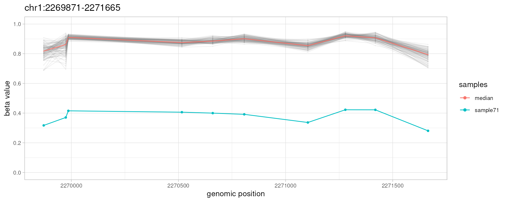
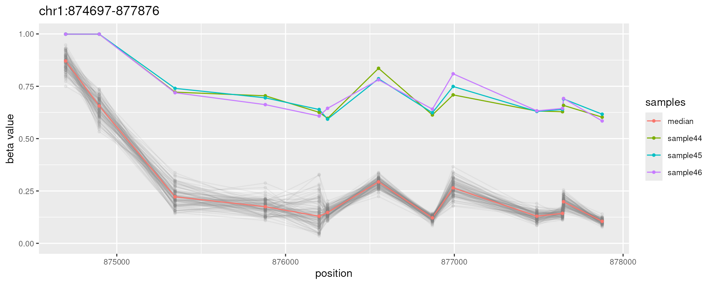
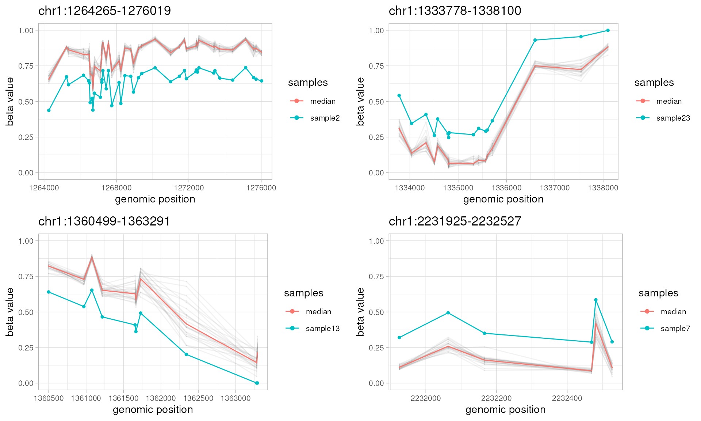
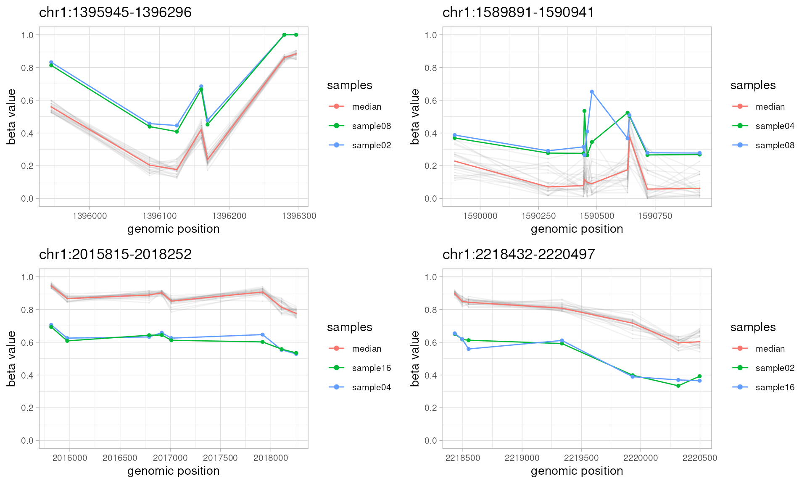
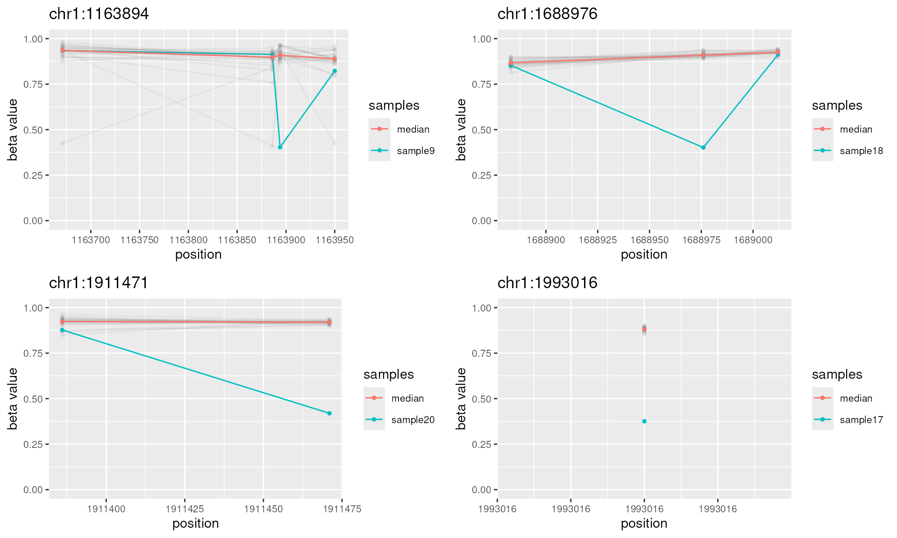
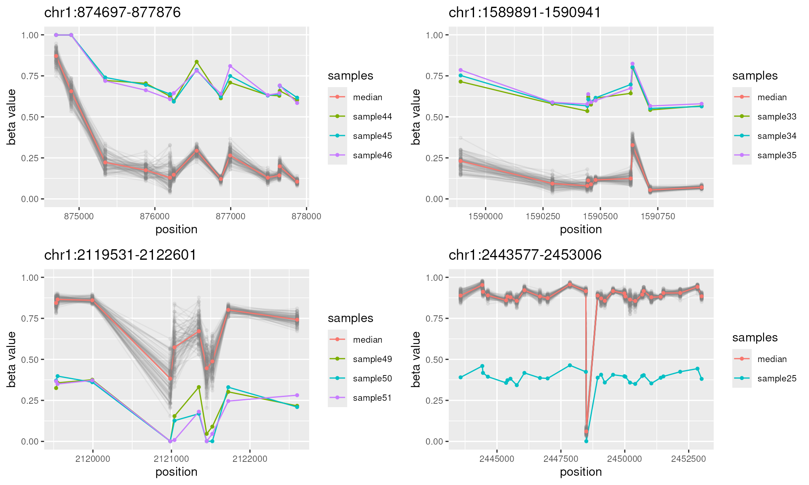

Abstract
A comprehensive guide to using the ramr package for detection of rare aberrantly methylated regions.
Introduction
ramr is an R package for detection of
low-frequency aberrant methylation events (epimutations) in large data
sets obtained by methylation profiling using array or high-throughput
bisulfite sequencing. In addition, package provides functions to
visualize found aberrantly methylated regions (AMRs), to generate sets
of all possible regions to be used as reference sets for enrichment
analysis, and to generate biologically relevant test data sets for
performance evaluation of AMR/DMR search algorithms.
Current Features
- Identification of aberrantly methylated regions (AMRs)
- AMR visualization
- Generation of reference sets for third-party analyses (e.g. enrichment)
- Generation of test data sets for performance evaluation of algorithms for search of differentially (DMR) or aberrantly (AMR) methylated regions
Reading data
ramr methods operate on objects of the class
GRanges. The input object for AMR search must in
addition contain metadata columns with sample beta values. A typical
input object looks like this:
GRanges object with 383788 ranges and 845 metadata columns:
seqnames ranges strand | GSM1235534 GSM1235535 GSM1235536 ...
<Rle> <IRanges> <Rle> | <numeric> <numeric> <numeric> ...
cg13869341 chr1 15865 * | 0.801634776091808 0.846486905008704 0.86732154737116 ...
cg24669183 chr1 534242 * | 0.834138820071765 0.861974610731835 0.832557979806823 ...
cg15560884 chr1 710097 * | 0.711275180750356 0.70461945838556 0.699487225634589 ...
cg01014490 chr1 714177 * | 0.0769098196182058 0.0569443780518647 0.0623154673389864 ...
cg17505339 chr1 720865 * | 0.876413362222415 0.885593263385521 0.877944732153869 ...
... ... ... ... . ... ... ... ...
cg05615487 chr22 51176407 * | 0.84904178467798 0.836538383875097 0.81568519870099 ...
cg22122449 chr22 51176711 * | 0.882444486059592 0.870804215405886 0.859269224277308 ...
cg08423507 chr22 51177982 * | 0.886406345093286 0.882430879852752 0.887241923657461 ...
cg19565306 chr22 51222011 * | 0.0719084295670266 0.0845209871264646 0.0689074604483659 ...
cg09226288 chr22 51225561 * | 0.724145303755024 0.696281176451351 0.711459675603635 ...
ramr package is supplied with a sample data,
which was simulated using GSE51032 data set as described in the
ramr reference paper. Sample data set
ramr.data contains beta values for 10000 CpGs and
100 samples (ramr.samples), and carries 6 unique
(ramr.tp.unique) and 15 non-unique
(ramr.tp.nonunique) true positive AMRs containing
at least 10 CpGs with their beta values increased/decreased by 0.5
library(GenomicRanges)
#> Loading required package: stats4
#> Loading required package: BiocGenerics
#> Loading required package: generics
#>
#> Attaching package: 'generics'
#> The following objects are masked from 'package:base':
#>
#> as.difftime, as.factor, as.ordered, intersect, is.element, setdiff, setequal, union
#>
#> Attaching package: 'BiocGenerics'
#> The following objects are masked from 'package:stats':
#>
#> IQR, mad, sd, var, xtabs
#> The following objects are masked from 'package:base':
#>
#> anyDuplicated, aperm, append, as.data.frame, basename, cbind, colnames, dirname,
#> do.call, duplicated, eval, evalq, Filter, Find, get, grep, grepl, is.unsorted,
#> lapply, Map, mapply, match, mget, order, paste, pmax, pmax.int, pmin, pmin.int,
#> Position, rank, rbind, Reduce, rownames, sapply, saveRDS, table, tapply, unique,
#> unsplit, which.max, which.min
#> Loading required package: S4Vectors
#>
#> Attaching package: 'S4Vectors'
#> The following object is masked from 'package:utils':
#>
#> findMatches
#> The following objects are masked from 'package:base':
#>
#> expand.grid, I, unname
#> Loading required package: IRanges
#> Loading required package: GenomeInfoDb
library(ggplot2)
library(ramr)
data(ramr)
head(ramr.samples)
#> [1] "sample1" "sample2" "sample3" "sample4" "sample5" "sample6"
ramr.data[1:10,ramr.samples[1:3]]
#> GRanges object with 10 ranges and 3 metadata columns:
#> seqnames ranges strand | sample1 sample2 sample3
#> <Rle> <IRanges> <Rle> | <numeric> <numeric> <numeric>
#> cg13869341 chr1 15865 * | 0.833609 0.847747 0.879959
#> cg14008030 chr1 18827 * | 0.553312 0.547931 0.609759
#> cg12045430 chr1 29407 * | 0.186572 0.204322 0.222865
#> cg20826792 chr1 29425 * | 0.481280 0.439688 0.426783
#> cg00381604 chr1 29435 * | 0.134126 0.173629 0.167011
#> cg20253340 chr1 68849 * | 0.500267 0.615868 0.541587
#> cg21870274 chr1 69591 * | 0.777613 0.771680 0.775057
#> cg03130891 chr1 91550 * | 0.245783 0.204307 0.223610
#> cg24335620 chr1 135252 * | 0.777796 0.790842 0.786113
#> cg16162899 chr1 449076 * | 0.878150 0.860134 0.898071
#> -------
#> seqinfo: 24 sequences from hg19 genome; no seqlengths
plotAMR(ramr.data, ramr.samples, ramr.tp.unique[1])
#> [[1]]

The input (or template) object may be obtained using data from various sources. Here we provide two examples:
Using data from NCBI GEO
The following code pulls (NB: very large) raw files from NCBI GEO
database, performes normalization and creates
GRanges object for further analysis using
ramr (system requirements: 22GB of disk space,
64GB of RAM)
library(minfi)
library(GEOquery)
library(GenomicRanges)
library(IlluminaHumanMethylation450kanno.ilmn12.hg19)
# destination for temporary files
dest.dir <- tempdir()
# downloading and unpacking raw IDAT files
suppl.files <- getGEOSuppFiles("GSE51032", baseDir=dest.dir, makeDirectory=FALSE, filter_regex="RAW")
untar(rownames(suppl.files), exdir=dest.dir, verbose=TRUE)
idat.files <- list.files(dest.dir, pattern="idat.gz$", full.names=TRUE)
sapply(idat.files, gunzip, overwrite=TRUE)
# reading IDAT files
geo.idat <- read.metharray.exp(dest.dir)
colnames(geo.idat) <- gsub("(GSM\\d+).*", "\\1", colnames(geo.idat))
# processing raw data
genomic.ratio.set <- preprocessQuantile(geo.idat, mergeManifest=TRUE, fixOutliers=TRUE)
# creating the GRanges object with beta values
data.ranges <- granges(genomic.ratio.set)
data.betas <- getBeta(genomic.ratio.set)
sample.ids <- colnames(geo.idat)
mcols(data.ranges) <- data.betas
# data.ranges and sample.ids objects are now ready for AMR search using ramrUsing Bismark cytosine report files
library(methylKit)
library(GenomicRanges)
# file.list is a user-defined character vector with full file names of Bismark cytosine report files
file.list
# sample.ids is a user-defined character vector holding sample names
sample.ids
# methylation context string, defines if the reads covering both strands will be merged
context <- "CpG"
# fitting beta distribution (filtering using ramr.method "beta" or "wbeta") requires
# that most of the beta values are not equal to 0 or 1
min.beta <- 0.001
max.beta <- 0.999
# reading and uniting methylation values
meth.data.raw <- methRead(as.list(file.list), as.list(sample.ids), assembly="hg19", header=TRUE,
context=context, resolution="base", treatment=rep(0,length(sample.ids)),
pipeline="bismarkCytosineReport")
meth.data.utd <- unite(meth.data.raw, destrand=isTRUE(context=="CpG"))
# creating the GRanges object with beta values
data.ranges <- GRanges(meth.data.utd)
data.betas <- percMethylation(meth.data.utd)/100
data.betas[data.betas<min.beta] <- min.beta
data.betas[data.betas>max.beta] <- max.beta
mcols(data.ranges) <- data.betas
# data.ranges and sample.ids objects are now ready for AMR search using ramrSimulating data
ramr provides methods to create sets of random
AMRs and to generate biologically relevant methylation beta values using
real data sets as templates. The following code provides an example,
however it is recommended to use a real experimental data
(e.g. GSE51032) to create a test data set for assessing the performance
of ramr or other AMR/DMR search engines. The
results of parallel data generation are fully reproducible when the same
seed has been set (thanks to doRNG::%dorng%).
# set the seed if reproducible results required
set.seed(999)
# unique random AMRs
amrs.unique <-
simulateAMR(ramr.data, nsamples=25, regions.per.sample=2,
min.cpgs=5, merge.window=1000, dbeta=0.2)
# non-unique AMRs outside of regions with unique AMRs
amrs.nonunique <-
simulateAMR(ramr.data, nsamples=4, exclude.ranges=amrs.unique,
samples.per.region=2, min.cpgs=5, merge.window=1000)
# random noise outside of AMR regions
noise <-
simulateAMR(ramr.data, nsamples=25, regions.per.sample=20,
exclude.ranges=c(amrs.unique, amrs.nonunique),
min.cpgs=1, max.cpgs=1, merge.window=1, dbeta=0.5)
# "smooth" methylation data without AMRs (negative control)
smooth.data <-
simulateData(ramr.data, nsamples=25, cores=2)
#> Simulating dataLoading required package: foreach
#> Loading required package: rngtools
#> [0.686s]
# methylation data with AMRs and noise
noisy.data <-
simulateData(ramr.data, nsamples=25,
amr.ranges=c(amrs.unique, amrs.nonunique, noise), cores=2)
#> Simulating data [0.687s]
#> Introducing epimutations [0.034s]
# that's how regions look like
library(gridExtra)
#>
#> Attaching package: 'gridExtra'
#>
#> The following object is masked from 'package:BiocGenerics':
#>
#> combine
do.call("grid.arrange", c(plotAMR(noisy.data, amr.ranges=amrs.unique[1:4]), ncol=2))

do.call("grid.arrange", c(plotAMR(noisy.data, amr.ranges=noise[1:4]), ncol=2))
#> `geom_line()`: Each group consists of only one observation.
#> ℹ Do you need to adjust the group aesthetic?
# can we find them?
system.time(found <- getAMR(noisy.data, ramr.method="beta", min.cpgs=5,
merge.window=1000, qval.cutoff=1e-2, cores=2))
#> Identifying AMRs [1.878s]
#> user system elapsed
#> 2.570 0.828 2.012
# all possible regions
all.ranges <- getUniverse(noisy.data, min.cpgs=5, merge.window=1000)
# true positives
tp <- sum(found %over% c(amrs.unique, amrs.nonunique))
# false positives
fp <- sum(found %outside% c(amrs.unique, amrs.nonunique))
# true negatives
tn <- length(all.ranges %outside% c(amrs.unique, amrs.nonunique))
# false negatives
fn <- sum(c(amrs.unique, amrs.nonunique) %outside% found)
# accuracy, MCC
acc <- (tp+tn) / (tp+tn+fp+fn)
mcc <- (tp*tn - fp*fn) / (sqrt(tp+fp)*sqrt(tp+fn)*sqrt(tn+fp)*sqrt(tn+fn))
setNames(c(tp, fp, tn, fn), c("TP", "FP", "TN", "FN"))
#> TP FP TN FN
#> 57 0 206 1
setNames(c(acc, mcc), c("accuracy", "MCC"))
#> accuracy MCC
#> 0.9962121 0.9889444AMR identification
This code shows how to do basic analysis with
ramr using provided data files:
# identify AMRs
amrs <- getAMR(ramr.data, ramr.samples, ramr.method="beta", min.cpgs=5,
merge.window=1000, qval.cutoff=1e-3, cores=2)
#> Identifying AMRs [4.333s]
# inspect
sort(amrs)
#> GRanges object with 22 ranges and 5 metadata columns:
#> seqnames ranges strand | revmap ncpg sample dbeta
#> <Rle> <IRanges> <Rle> | <list> <integer> <character> <numeric>
#> [1] chr1 566172-569687 * | 17,18,19,... 15 sample95 0.498337
#> [2] chr1 874697-877876 * | 165,166,167,... 13 sample44 0.451475
#> [3] chr1 874697-877876 * | 165,166,167,... 13 sample45 0.457115
#> [4] chr1 874697-877876 * | 165,166,167,... 13 sample46 0.458498
#> [5] chr1 1095607-1106175 * | 620,621,622,... 49 sample66 -0.503085
#> ... ... ... ... . ... ... ... ...
#> [18] chr1 2200890-2203648 * | 2263,2264,2265,... 10 sample58 -0.505059
#> [19] chr1 2200890-2203648 * | 2263,2264,2265,... 10 sample59 -0.498849
#> [20] chr1 2200890-2203648 * | 2263,2264,2265,... 10 sample60 -0.500389
#> [21] chr1 2269871-2271665 * | 2410,2411,2412,... 10 sample71 -0.496600
#> [22] chr1 2443577-2453006 * | 2722,2723,2724,... 30 sample25 -0.484617
#> pval
#> <numeric>
#> [1] 4.60616e-171
#> [2] 1.30458e-07
#> [3] 1.04111e-07
#> [4] 8.03068e-08
#> [5] 1.92980e-17
#> ... ...
#> [18] 2.98503e-08
#> [19] 4.05494e-08
#> [20] 3.68870e-08
#> [21] 1.54741e-17
#> [22] 1.26772e-19
#> -------
#> seqinfo: 24 sequences from hg19 genome; no seqlengths
do.call("grid.arrange", c(plotAMR(ramr.data, ramr.samples, amrs[1:10]), ncol=2))
Again, the results of parallel processing are fully reproducible if the same seed has been set.
AMR annotation and enrichment analysis
If necessary, AMRs can be annotated to known genomic elements using R
library annotatr 1 or tested for
potential enrichment in epigenetic or other marks using R library
LOLA 2
# annotating AMRs using R library annotatr
library(annotatr)
#> Registered S3 method overwritten by 'bit':
#> method from
#> print.ri gamlss
annotation.types <- c("hg19_cpg_inter", "hg19_cpg_islands", "hg19_cpg_shores",
"hg19_cpg_shelves", "hg19_genes_intergenic", "hg19_genes_promoters",
"hg19_genes_5UTRs", "hg19_genes_firstexons", "hg19_genes_3UTRs")
annotations <- build_annotations(genome='hg19', annotations=annotation.types)
#> Loading required package: GenomicFeatures
#> Loading required package: AnnotationDbi
#> Loading required package: Biobase
#> Welcome to Bioconductor
#>
#> Vignettes contain introductory material; view with 'browseVignettes()'. To cite
#> Bioconductor, see 'citation("Biobase")', and for packages 'citation("pkgname")'.
#>
#> 'select()' returned 1:1 mapping between keys and columns
#> Building promoters...
#> Building 1to5kb upstream of TSS...
#> Building intergenic...
#> Building 5UTRs...
#> Building 3UTRs...
#> Building exons...
#> Building first exons...
#> Building introns...
#> Building CpG islands...
#> loading from cache
#> Building CpG shores...
#> Building CpG shelves...
#> Building inter-CpG-islands...
amrs.annots <- annotate_regions(regions=amrs, annotations=annotations, ignore.strand=TRUE, quiet=FALSE)
#> Annotating...
summarize_annotations(annotated_regions=amrs.annots, quiet=FALSE)
#> Counting annotation types
#> # A tibble: 9 × 2
#> annot.type n
#> <chr> <int>
#> 1 hg19_cpg_inter 4
#> 2 hg19_cpg_islands 10
#> 3 hg19_cpg_shelves 4
#> 4 hg19_cpg_shores 10
#> 5 hg19_genes_3UTRs 2
#> 6 hg19_genes_5UTRs 5
#> 7 hg19_genes_firstexons 8
#> 8 hg19_genes_intergenic 1
#> 9 hg19_genes_promoters 8# generate the set of all possible genomic regions using sample data set and
# the same parameters as for AMR search
universe <- getUniverse(ramr.data, min.cpgs=5, merge.window=1000)
# enrichment analysis of AMRs using R library LOLA
library(LOLA)
# prepare the core database as described in vignettes
vignette("usingLOLACore")
# load the core database and perform the enrichment analysis
hg19.coredb <- loadRegionDB(system.file("LOLACore", "hg19", package="LOLA"))
runLOLA(amrs, universe, hg19.coredb, cores=1, redefineUserSets=TRUE)Citing the ramr package
Oleksii Nikolaienko, Per Eystein Lønning, Stian Knappskog, ramr: an R/Bioconductor package for detection of rare aberrantly methylated regions, Bioinformatics, 2021;, btab586, https://doi.org/10.1093/bioinformatics/btab586
The data underlying ramr manuscript
Replication Data for: “ramr: an R package for detection of rare aberrantly methylated regions, https://doi.org/10.18710/ED8HSD
Session Info
sessionInfo()
#> R Under development (unstable) (2024-12-13 r87441)
#> Platform: x86_64-pc-linux-gnu
#> Running under: Ubuntu 24.04.1 LTS
#>
#> Matrix products: default
#> BLAS: /usr/lib/x86_64-linux-gnu/openblas-pthread/libblas.so.3
#> LAPACK: /usr/lib/x86_64-linux-gnu/openblas-pthread/libopenblasp-r0.3.26.so; LAPACK version 3.12.0
#>
#> locale:
#> [1] LC_CTYPE=en_US.UTF-8 LC_NUMERIC=C LC_TIME=en_US.UTF-8
#> [4] LC_COLLATE=en_US.UTF-8 LC_MONETARY=en_US.UTF-8 LC_MESSAGES=en_US.UTF-8
#> [7] LC_PAPER=en_US.UTF-8 LC_NAME=C LC_ADDRESS=C
#> [10] LC_TELEPHONE=C LC_MEASUREMENT=en_US.UTF-8 LC_IDENTIFICATION=C
#>
#> time zone: UTC
#> tzcode source: system (glibc)
#>
#> attached base packages:
#> [1] stats4 stats graphics grDevices utils datasets methods base
#>
#> other attached packages:
#> [1] org.Hs.eg.db_3.20.0 TxDb.Hsapiens.UCSC.hg19.knownGene_3.2.2
#> [3] GenomicFeatures_1.59.1 AnnotationDbi_1.69.0
#> [5] Biobase_2.67.0 annotatr_1.33.0
#> [7] gridExtra_2.3 doRNG_1.8.6
#> [9] rngtools_1.5.2 foreach_1.5.2
#> [11] ramr_1.15.1 ggplot2_3.5.1
#> [13] GenomicRanges_1.59.1 GenomeInfoDb_1.43.2
#> [15] IRanges_2.41.2 S4Vectors_0.45.2
#> [17] BiocGenerics_0.53.3 generics_0.1.3
#>
#> loaded via a namespace (and not attached):
#> [1] jsonlite_1.8.9 magrittr_2.0.3 farver_2.1.2
#> [4] nloptr_2.1.1 rmarkdown_2.29 fs_1.6.5
#> [7] BiocIO_1.17.1 zlibbioc_1.53.0 ragg_1.3.3
#> [10] vctrs_0.6.5 memoise_2.0.1 Rsamtools_2.23.1
#> [13] RCurl_1.98-1.16 htmltools_0.5.8.1 S4Arrays_1.7.1
#> [16] AnnotationHub_3.15.0 curl_6.0.1 SparseArray_1.7.2
#> [19] sass_0.4.9 pracma_2.4.4 bslib_0.8.0
#> [22] htmlwidgets_1.6.4 desc_1.4.3 plyr_1.8.9
#> [25] cachem_1.1.0 GenomicAlignments_1.43.0 mime_0.12
#> [28] lifecycle_1.0.4 iterators_1.0.14 pkgconfig_2.0.3
#> [31] optimx_2024-12.2 Matrix_1.7-1 R6_2.5.1
#> [34] fastmap_1.2.0 GenomeInfoDbData_1.2.13 MatrixGenerics_1.19.0
#> [37] digest_0.6.37 numDeriv_2016.8-1.1 colorspace_2.1-1
#> [40] regioneR_1.39.0 textshaping_0.4.1 RSQLite_2.3.9
#> [43] filelock_1.0.3 labeling_0.4.3 fansi_1.0.6
#> [46] httr_1.4.7 abind_1.4-8 compiler_4.5.0
#> [49] bit64_4.5.2 withr_3.0.2 doParallel_1.0.17
#> [52] BiocParallel_1.41.0 DBI_1.2.3 MASS_7.3-61
#> [55] rappdirs_0.3.3 DelayedArray_0.33.3 rjson_0.2.23
#> [58] tools_4.5.0 glue_1.8.0 restfulr_0.0.15
#> [61] nlme_3.1-166 grid_4.5.0 reshape2_1.4.4
#> [64] gtable_0.3.6 BSgenome_1.75.0 tzdb_0.4.0
#> [67] data.table_1.16.4 hms_1.1.3 utf8_1.2.4
#> [70] XVector_0.47.0 stringr_1.5.1 BiocVersion_3.21.1
#> [73] pillar_1.9.0 splines_4.5.0 dplyr_1.1.4
#> [76] BiocFileCache_2.15.0 lattice_0.22-6 survival_3.7-0
#> [79] rtracklayer_1.67.0 bit_4.5.0.1 gamlss.data_6.0-6
#> [82] tidyselect_1.2.1 Biostrings_2.75.3 knitr_1.49
#> [85] ExtDist_0.7-2 SummarizedExperiment_1.37.0 xfun_0.49
#> [88] matrixStats_1.4.1 stringi_1.8.4 UCSC.utils_1.3.0
#> [91] yaml_2.3.10 evaluate_1.0.1 codetools_0.2-20
#> [94] tibble_3.2.1 BiocManager_1.30.25 cli_3.6.3
#> [97] systemfonts_1.1.0 munsell_0.5.1 jquerylib_0.1.4
#> [100] Rcpp_1.0.13-1 EnvStats_3.0.0 dbplyr_2.5.0
#> [103] png_0.1-8 XML_3.99-0.17 parallel_4.5.0
#> [106] pkgdown_2.1.1.9000 readr_2.1.5 blob_1.2.4
#> [109] bitops_1.0-9 gamlss.dist_6.1-1 scales_1.3.0
#> [112] gamlss_5.4-22 purrr_1.0.2 crayon_1.5.3
#> [115] rlang_1.1.4 KEGGREST_1.47.0